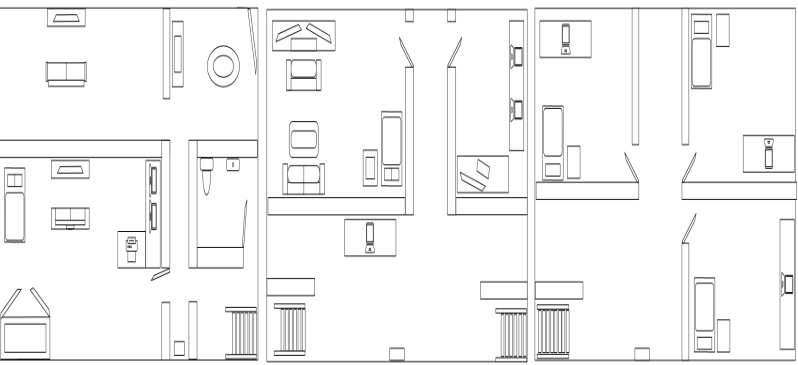
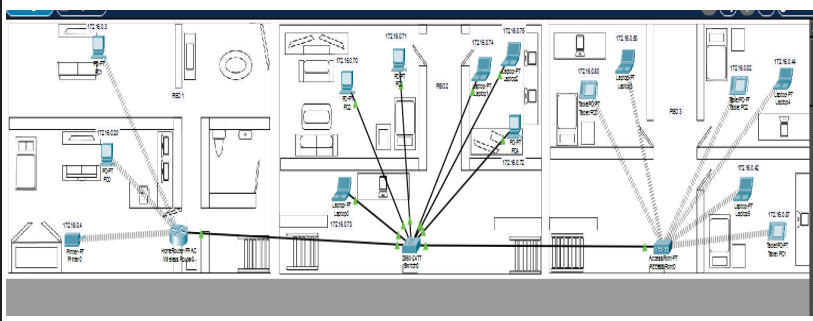
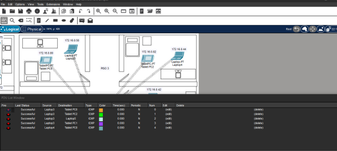

En este proyecto se diseñó e implementó una red LAN doméstica distribuida en una vivienda de tres niveles. Se configuró un router principal con direccionamiento IP de clase B, al cual se conectaron dispositivos tanto de forma inalámbrica como cableada. En el segundo nivel se integró un switch en cascada para ampliar la red y conectar múltiples equipos, mientras que en el tercer nivel se utilizó un repetidor inalámbrico para extender la cobertura y permitir la conexión de dispositivos móviles. Además, se implementaron medidas de seguridad como contraseñas de acceso y se comprobó la comunicación entre los dispositivos mediante pruebas en consola y representación gráfica. El proyecto fue documentado y presentado mediante un informe técnico y un video explicativo.


